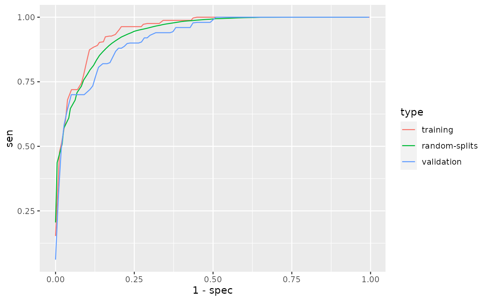

library(PheCAP)set.seed(123)Generate simulated data.
latent <- rgamma(8000, 0.3)
latent2 <- rgamma(8000, 0.3)
ehr_data <- data.frame(
patient_id = 1:8000,
ICD1 = rpois(8000, 7 * (rgamma(8000, 0.2) + latent) / 0.5),
ICD2 = rpois(8000, 6 * (rgamma(8000, 0.8) + latent) / 1.1),
ICD3 = rpois(8000, 1 * rgamma(8000, 0.5 + latent2) / 0.5),
ICD4 = rpois(8000, 2 * rgamma(8000, 0.5) / 0.5),
NLP1 = rpois(8000, 8 * (rgamma(8000, 0.2) + latent) / 0.6),
NLP2 = rpois(8000, 2 * (rgamma(8000, 1.1) + latent) / 1.5),
NLP3 = rpois(8000, 5 * (rgamma(8000, 0.1) + latent) / 0.5),
NLP4 = rpois(8000, 11 * rgamma(8000, 1.9 + latent) / 1.9),
NLP5 = rpois(8000, 3 * rgamma(8000, 0.5 + latent2) / 0.5),
NLP6 = rpois(8000, 2 * rgamma(8000, 0.5) / 0.5),
NLP7 = rpois(8000, 1 * rgamma(8000, 0.5) / 0.5),
HU = rpois(8000, 30 * rgamma(8000, 0.1) / 0.1),
label = NA)
ii <- sample.int(8000, 400)
ehr_data[ii, "label"] <- with(
ehr_data[ii, ], rbinom(400, 1, plogis(
-5 + 1.5 * log1p(ICD1) + log1p(NLP1) +
0.8 * log1p(NLP3) - 0.5 * log1p(HU))))
head(ehr_data)## patient_id ICD1 ICD2 ICD3 ICD4 NLP1 NLP2 NLP3 NLP4 NLP5 NLP6 NLP7 HU
## 1 1 2 11 3 0 0 2 2 2 1 7 0 4
## 2 2 5 11 3 1 5 0 1 11 5 0 0 0
## 3 3 17 10 0 2 20 2 16 10 0 0 2 0
## 4 4 0 5 0 0 0 0 0 15 3 3 7 0
## 5 5 0 5 1 0 0 3 7 6 31 0 3 146
## 6 6 4 11 4 0 13 2 3 4 2 3 0 0
## label
## 1 NA
## 2 NA
## 3 NA
## 4 0
## 5 NA
## 6 NAtail(ehr_data)## patient_id ICD1 ICD2 ICD3 ICD4 NLP1 NLP2 NLP3 NLP4 NLP5 NLP6 NLP7 HU
## 7995 7995 9 23 0 7 11 4 1 17 4 0 0 1
## 7996 7996 21 7 9 0 6 1 1 6 4 1 2 11
## 7997 7997 26 0 0 1 0 1 0 10 3 0 3 0
## 7998 7998 3 0 5 1 34 1 5 21 4 4 1 46
## 7999 7999 0 0 0 0 4 0 0 5 0 0 5 0
## 8000 8000 0 4 0 0 0 14 1 3 0 4 2 9
## label
## 7995 NA
## 7996 NA
## 7997 1
## 7998 NA
## 7999 NA
## 8000 0Define features and labels used for phenotyping.
data <- PhecapData(ehr_data, "HU", "label", 0.4, patient_id = "patient_id")
data## PheCAP Data
## Feature: 8000 observations of 12 variables
## Label: 155 yes, 245 no, 7600 missing
## Size of training samples: 240
## Size of validation samples: 160Specify the surrogate used for surrogate-assisted feature extraction (SAFE). The typical way is to specify a main ICD code, a main NLP CUI, as well as their combination. The default lower_cutoff is 1, and the default upper_cutoff is 10. In some cases one may want to define surrogate through lab test. Feel free to change the cutoffs based on domain knowledge.
surrogates <- list(
PhecapSurrogate(
variable_names = "ICD1",
lower_cutoff = 1, upper_cutoff = 10),
PhecapSurrogate(
variable_names = "NLP1",
lower_cutoff = 1, upper_cutoff = 10))Run surrogate-assisted feature extraction (SAFE) and show result.
system.time(feature_selected <- phecap_run_feature_extraction(data, surrogates))## user system elapsed
## 8.472 0.012 8.481feature_selected## Feature(s) selected by surrogate-assisted feature extraction (SAFE)
## [1] "ICD1" "ICD2" "NLP1" "NLP2" "NLP3"Train phenotyping model and show the fitted model, with the AUC on the training set as well as random splits.
model <- phecap_train_phenotyping_model(data, surrogates, feature_selected)
model## Phenotyping model:
## $lasso_bic
## (Intercept) ICD1 NLP1 HU ICD2 NLP2
## -4.8667672 1.7010237 1.3281989 -0.3738916 0.0000000 0.0000000
## NLP3
## 0.0000000
##
## AUC on training data: 0.936
## Average AUC on random splits: 0.933Validate phenotyping model using validation label, and show the AUC and ROC.
validation <- phecap_validate_phenotyping_model(data, model)
validation## AUC on validation data: 0.943
## AUC on training data: 0.936
## Average AUC on random splits: 0.933round(validation$valid_roc[validation$valid_roc[, "FPR"] <= 0.2, ], 3)## cutoff pos.rate FPR TPR PPV NPV F1
## [1,] 0.999 0.003 0.000 0.178 1.000 0.658 0.302
## [2,] 0.951 0.150 0.010 0.433 0.964 0.734 0.598
## [3,] 0.901 0.206 0.020 0.552 0.945 0.776 0.697
## [4,] 0.855 0.256 0.031 0.655 0.931 0.816 0.769
## [5,] 0.768 0.300 0.041 0.716 0.917 0.842 0.805
## [6,] 0.742 0.312 0.051 0.745 0.902 0.855 0.816
## [7,] 0.702 0.338 0.061 0.780 0.890 0.871 0.831
## [8,] 0.694 0.350 0.071 0.796 0.876 0.878 0.834
## [9,] 0.665 0.362 0.082 0.806 0.862 0.882 0.833
## [10,] 0.661 0.369 0.092 0.806 0.847 0.881 0.826
## [11,] 0.656 0.375 0.102 0.806 0.833 0.880 0.820
## [12,] 0.641 0.381 0.112 0.809 0.820 0.880 0.814
## [13,] 0.614 0.394 0.122 0.823 0.810 0.887 0.816
## [14,] 0.599 0.412 0.133 0.855 0.803 0.904 0.828
## [15,] 0.577 0.425 0.143 0.871 0.794 0.913 0.831
## [16,] 0.563 0.431 0.153 0.871 0.783 0.912 0.824
## [17,] 0.526 0.438 0.163 0.874 0.772 0.913 0.820
## [18,] 0.514 0.450 0.173 0.887 0.764 0.920 0.821
## [19,] 0.509 0.456 0.184 0.889 0.754 0.921 0.816
## [20,] 0.467 0.469 0.194 0.903 0.747 0.929 0.818phecap_plot_roc_curves(validation)
Apply the model to all the patients to obtain predicted phenotype.
phenotype <- phecap_predict_phenotype(data, model)
idx <- which.min(abs(validation$valid_roc[, "FPR"] - 0.05))
cut.fpr95 <- validation$valid_roc[idx, "cutoff"]
case_status <- ifelse(phenotype$prediction >= cut.fpr95, 1, 0)
predict.table <- cbind(phenotype, case_status)
predict.table[1:10, ]## patient_id prediction case_status
## 1 1 0.026603284 0
## 2 2 0.636654062 0
## 3 3 0.983593821 1
## 4 4 0.007639402 0
## 5 5 0.001189956 0
## 6 6 0.798366788 1
## 7 7 0.796181336 1
## 8 8 0.003373951 0
## 9 9 0.877432254 1
## 10 10 0.085047750 0